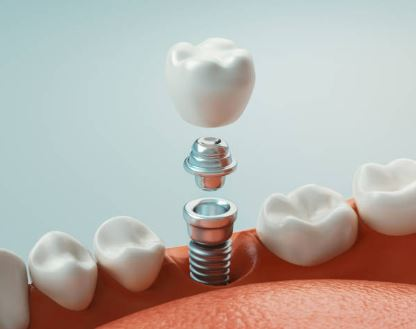
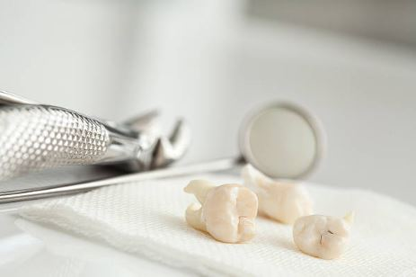
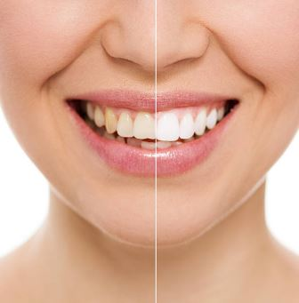
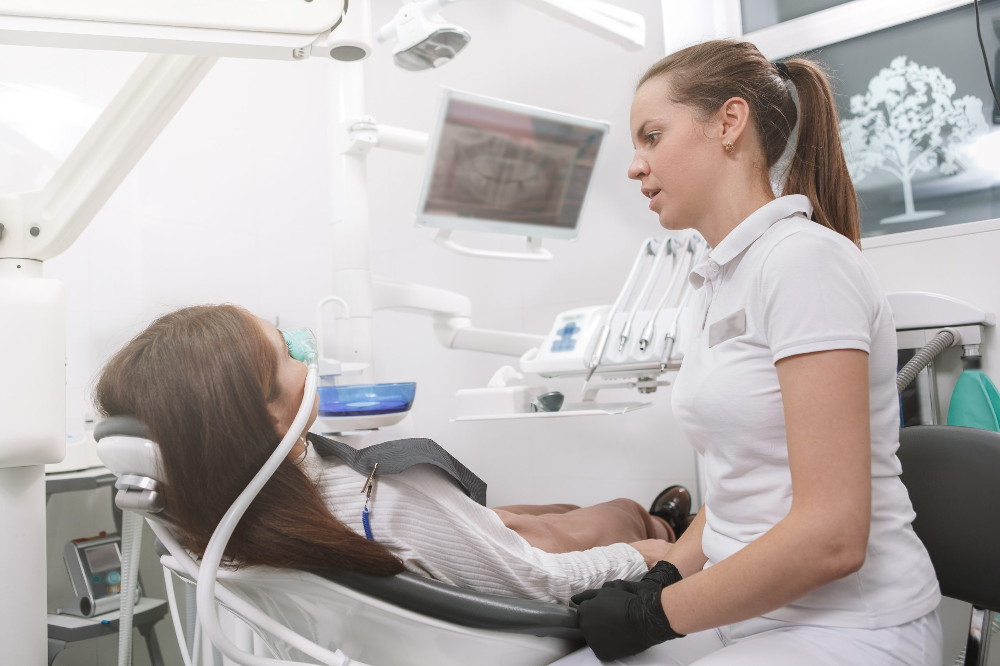

Sobre

Olá paciente, me chamo Bárbara Soares Montalvão Ferreira e sou dentista formada há mais de 10 anos pela
UFMG. Com pós-graduação e especialização na área de Cirurgia e Implantes.
Prezo pelo atendimento
humanizado e acolhedor, focando no melhor planejamento para seu conforto e saúde.
Veja aqui meu currículo
Implantes

Se você perdeu um dente ou mais, o meu intuito é devolver a autoestima e função por meio de implantes
dentários, usando marcas conceituadas no mercado (Geistlich, Straumann, Neodent).
O implante consiste em
um dispositivo de titânio instalado na região da ausência do dente, e por cima deste construímos um
dente ou uma prótese. Para sua segurança, o uso da tomografia é indispensável para que eu possa escolher
o melhor implante pro seu caso.
Quer fazer dormindo?

A remoção dos sisos pode ser indicada devido à formação de cistos e tumores, infecções, reabsorções de
dentes vizinhos, entre outros problemas.
Tenho ampla experiência clínica na remoção de sisos complexos e
simples e conduzo a cirurgia da melhor forma possível para garantir a sua saúde bucal.
Quer
fazer dormindo?
Outros

Também ofereço tratamentos como
- Clareamento
- Tratamento periodontal
- Prótese
- Limpeza
- Atendimento infantil
- Ortodontia
- Endodontia (canal)
- Entre outros
Conto com a parceria de dentistas especializados nas diversas áreas citadas
Faça Dormindo

Você que tem receio de cirurgias, fica cansado quando fica com a boca aberta por determinado tempo, tem alguma necessidade especial ou simplesmente quer passar pelo procedimento com maior conforto: sabia que é possível fazer seu atendimento dormindo?
Em parceria com médicos especializados, é possível fazer a sua cirurgia com sedação para seu total conforto de uma maneira segura e bem assistida!